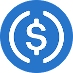
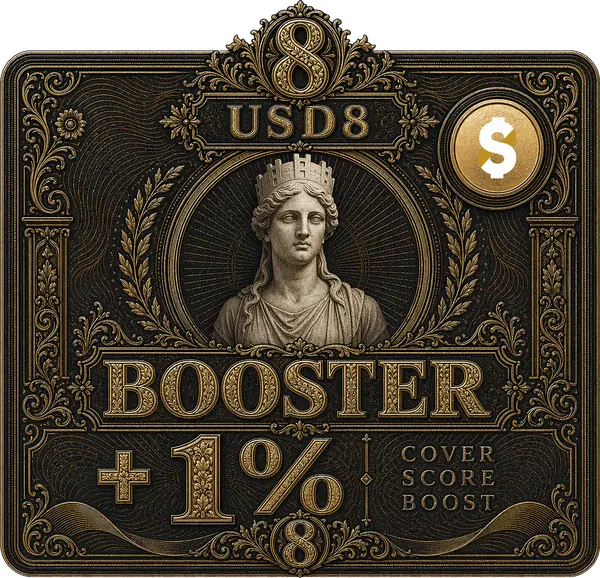

USD8

USD8, 1:1 oranında USDC ile desteklenen bir stablecoin’dir.
Bugünkü DeFi ortamındaki çarpık teşvikleri düzeltmek için tasarlandı ve iki temel işlevi var: Ücretsiz DeFi Sigortası ve Beyaz Şapka Ekonomisi. Felsefi kökenlerimiz hakkında daha fazlasını da okuyabilirsiniz.
Neden USD8
| USD8 |  USDC | |
|---|---|---|
| Fiyat istikrarı | ✓ 1:1 oranında USDC ile desteklenir | ✓ |
| Getiri fırsatları | ✓ | ✓ |
| Stablecoin’in kendisi sigortalı | ✓ Teminat Havuzu ile sınırlı | ✕ |
| Seçili diğer DeFi token’larını sigortalar | ✓ | ✕ |
| Gelecekteki DeFi hack’lerini caydırmaya yardımcı olur | ✓ Beyaz Şapka Ekonomisi sayesinde | ✕ |
USD8 Nasıl Kullanılır
Düşük risk tercih eden DeFi kullanıcıları: USD8 tutun ya da USD8 ile getiri elde edin; USD8’in kendisi de dahil olmak üzere bir dizi DeFi token’ı ve pozisyonu için ücretsiz DeFi sigortasından yararlanın.
Risk iştahı yüksek, yüksek getiri arayan kullanıcılar: USD8’in Teminat Havuzlarına yatırın; DeFi sigortasını desteklerken yüksek yıllık getiri elde edin.
Zincir Üstü + Açık Kaynak
USD8 sistemi zincir üstü ve zincir dışı olmak üzere iki bölümden oluşur ve kodun tamamı açık kaynaktır. Zincir üstü bölüm yaygın DeFi uygulamalarını izler: Hassas ayarlar bir timelock (zaman kilidi) üzerinden değiştirilir. Zincir dışı bölüm, hesaplamalar için açık kaynak algoritmalar çalıştıran bir TEE kullanır ve sonuçları herkes doğrulayabilir.
Bu belgeler USD8’i sade bir dille anlatmayı amaçlar. Teknik ayrıntılar ve kodun kendisi için GitHub depomuza göz atın.
İletişim
Bize şu kanallardan ulaşabilirsiniz:
- USD8 Telegram: https://t.me/+e84i2oYk1ao1MTk1
- X: @usd8_fi
- E-posta: info[at]usd8.fi
Felsefi Kökenler

Yıkılan Rüya
Merkezi gücün kötüye kullanılmasına karşı koymak için merkeziyetsizlik rüyasını benimserken, kötü davranışlarla başa çıkan yaptırım mekanizmalarından da vazgeçtik. Hiçbir güvence olmadan kripto yavaş yavaş bir distopyaya dönüşüyor: Hacker’lar ve kötü niyetli kurucular gibi kötü aktörler, güpegündüz hack yapıp çalmaya güçlü biçimde teşvik ediliyor, bunun için ödüllendiriliyor ve neredeyse hiçbir yaptırımla karşılaşmıyor.
Bu distopya, Gresham Yasası uyarınca merkeziyetsiz sektörü yavaş yavaş öldürüyor: İyi aktörler, geriye yalnızca kötü aktörler kalana dek giderek sahneden çekiliyor.

Sir Thomas Gresham (1519–1579)
Başarısız Girişim
Ethereum’un ilk döneminde bir çözüm denemesi vardı: “Kod Kanundur” (Code is Law). Bu yaklaşım, kötü davranışları önlemek için akıllı sözleşmelerin değiştirilemezliğine dayanıyordu. Ne yazık ki işe yaramadı; bunun başlıca nedenleri akıllı sözleşmelerdeki güvenlik açıkları ve yükseltilebilirliğe duyulan pratik ihtiyaçtı. Yükseltilebilirlik bugün hâlâ sektörde bir anlaşmazlık konusu.
Kripto dünyasının kusurlu olduğu ortadayken yeni bir çözüm üretmedik; kusuru görmezden geldik, çünkü sürekli yaşanan hack’lere ve rug pull’lara karşı duyarsızlaştık. Bu oldukça sorumsuzca. Bir sonraki milyon masum kullanıcıyı sisteme kattığımızda durum daha da kötüleşiyor: Hayat boyu biriktirdikleri parayı usta hacker’ların ve sosyal mühendislik saldırılarının hedefi hâline getiriyoruz.
Kripto Yerlisi Bir Alternatif
Merkezi bir güce dayanmayan ama yine de kötü niyetli aktörleri caydırabilen yeni bir çözüme ihtiyacımız var. USD8 bu yöndeki girişimimiz; misyonumuz, DeFi güvenliğinde eksik olan düzeni sağlama katmanını geri getirmek.

Murray Rothbard (1926–1995), anarko-kapitalizmin kurucusu ve başlıca kuramcısı.
USD8, anarko-kapitalizmin felsefi önerisine dayanır: Gönüllülük esasına dayalı bir toplumda, merkezi devlet sisteminin sunduğu temel hizmetlerin yerini sigorta şirketleri ve özel kuruluşlar alır. Bu sistemde teşvikler, merkezi bir hükümet olmadan işleyen bir toplum kurmak için kapitalizm ve oyun teorisiyle özenle hizalanır.
Bu modeli uyarlayıp kripto yerlisi hâle getirdik; amacımız DeFi’nin ve tüm kripto sisteminin eksik kalan son parçasını sağlamak. USD8 iki temel amaca hizmet edecek: kullanıcıların kayıplarını karşılayan bir sigorta olmak ve hack’lenen varlıkları geri kazanmak için düzeni sağlayan bir mekanizma olmak.
Sigorta
USD8, DeFi kullanıcılarına USD8 kullanım geçmişlerine dayanan sigorta puanlarına göre ücretsiz sigorta sunar. Teminat, ekibimizin ve üçüncü taraf güvenlik ortaklarımızın incelediği bir dizi DeFi token’ını kapsar. USD8’i ne kadar çok kullanırsanız teminatınız da o kadar artar. Sigortalı herhangi bir DeFi token’ı ciddi oranda (şu anda %20) düşerse kullanıcılar değerin %80’ine kadarını geri talep edebilir.
Gerçek ödeme, kullanıcının USD8 geçmişinin diğer talep sahiplerininkiyle karşılaştırmasına ve Teminat Havuzunun büyüklüğüne bağlıdır.
Ödemeler, USD8’in Teminat Havuzlarından yapılır. Bunlar farklı varlık türlerini kabul eden ve USD8’in hazine geliriyle teşvik edilen herkese açık kasalardır. Teminat Havuzlarına yatırım yapan tüm LP’ler USD8 cinsinden stablecoin getirisi alır; ancak Teminat Havuzundaki varlıklar olası kayıpları karşılamak için kullanılabilir.
Bu sigorta sistemi şu nedenlerle heyecan verici:
- Sektörde bir ilk olan bu teminat, geçmişteki ve bugünkü tüm USD8 kullanıcıları için ücretsizdir.
- Geleneksel olarak getiri kaynağı bulunmayan wBTC gibi varlıklara, hatta AAVE, LINK, UNI gibi altcoin’lere stablecoin cinsinden yeni bir getiri kaynağı sunarak sermaye verimliliğinin önünü açar.
Düzenin Sağlanması
Kullanıcılar talepte bulunduktan sonra USD8’in elinde hack’lenmiş LP token’larından oluşan bir yığın birikir. Bu durum USD8’i, söz konusu fonları geri kazanmak için güçlü finansal teşviklere sahip benzersiz bir konuma getirir. USD8, kara şapkalıları ödüllendiren bugünkü kripto sisteminin aksine bir Beyaz Şapka Ekonomisi geliştirecek. Bu ekonomi, kaybedilen fonların izlenmesi ve geri kazanılması sürecine kamuoyunu da dahil edecek; ayrıntılar için Beyaz Şapka Ekonomisi sayfasına bakın.
Bu sistem, iyi aktörlere güçlü teşvikler sunup kötü niyetlilere caydırıcı ek bir yük bindirerek olumlu bir kültür oluşturabilir; zamanla kendini gerçekleştiren bir algıya dönüşerek sektör genelinde kötü niyetli eylemleri daha da azaltabilir: Hacker’lar yaptıkları yüzünden kamuoyu ve profesyoneller tarafından sonsuza dek takip edileceklerini bilirlerse, suçu işleyecekleri anda hack yapıp çalma kararları değişebilir.
DeFi Sigortası
- USD8 ve sUSD8 sahipleri her blokta sigorta puanı kazanır
- Sigorta puanıyla, USD8 ve sUSD8 dahil bir dizi sigortalı DeFi token’ı için talepte bulunabilirsiniz
- Puan ne kadar yüksekse ödeme de o kadar yüksek olur: Değerin %80’ine kadar, Teminat Havuzu limitiyle sınırlı
- Puan devredilemez ve süresi hiçbir zaman dolmaz
- Ödemeler Teminat Havuzlarından karşılanır
Örnek: Aave aUSDC'nin, azami teminatı %80 olan sigortalı bir token olduğunu varsayalım
- aUSDC'nin USDC karşısındaki değeri 1'den 0.3'e düşer
- Sigorta puanı olan kullanıcı, aUSDC'sini vererek karşılığında Teminat Havuzu varlıklarından 0.8 USDC değerine kadar ödeme alır
Talep Süreci
Talep süreci, zincir üstü ve zincir dışı (TEE) işlemleri birleştiren 3 adımdan oluşur ve beta döneminde yaklaşık 9-12 gün, beta sonrasında ise 6-9 gün sürer. Hiçbir son tarihi kaçırmamanız önemlidir.
1 Talepte Bulunun
Şu koşullar sağlanıyorsa herkes talepte bulunabilir:
- Sigortalı bir token’ın art arda iki 24 saatlik TWAP fiyatı arasında, son 1-6 gün içinde %20’den fazla düşüş yaşanmışsa
- Talep sahibinin, fiyat düşüşünden en az 7 gün önce kazanılmış ve henüz harcanmamış sigorta puanı varsa
- Talep sahibi, sigortalı token’ı fiyat düşüşünden önce en az 7 gün boyunca elinde tutmuşsa
Ayrıca 10 USD8 tutarında bir depozito gerekir; 2. ve 3. koşullar sağlanırsa tamamı iade edilir. Fiyat düşüşünün ne zaman yaşandığını belirtmeniz gerekmez: TEE’miz düşüşü kendisi bulur ve hangi blokta gerçekleştiğini tam olarak belirler.
Önemli: Talep süresi, ilk geçerli talepten 3 gün sonra kapanır; bundan sonra bu sigortalı token için talepte bulunulamaz.
2 Talepleri Uzlaştırın
Herkes, TEE’den alınan bir onay belgesini (attestation) göndererek talepleri uzlaştırabilir. TEE, her talep sahibinin sigorta puanını ve ödemesini açık kaynak bir algoritmayla hesaplar. Sonuçlar tamamen doğrulanabilir.
Her talep sahibinin ödeme tutarı şunlara göre hesaplanır:
- Talep sahibinin sigorta puanının, tüm talep sahiplerinin toplam puanına oranı
- Teminat Havuzu limiti
- Sigortalı token’ın azami teminat oranı
Örnek: İki talep sahibi var. A'nın 100, B'nin 200 puanı var ve ikisi de azami teminatı %80 olan, $500 değerinde sigortalı token'ı emanete vermiş. Teminat Havuzunda şu anda $2250 değerinde varlık bulunuyor.
- Teminat Havuzu limiti şu anda %50 olduğundan toplam $1125 kullanılabilir. Bunun %80'i, yani $900, talepleri karşılama bütçesidir. A'nın puanı B'ninkinin yarısı olduğundan A en fazla $300, B ise en fazla $600 alabilir.
- A da B de $500 değerinde sigortalı token emanete verdi; %80 azami teminatla, kayıpları için alabilecekleri tutar $400 ile sınırlıdır.
- A $300, B ise $400 ödeme alır.
Uzlaştırma süresi en fazla 3 gün açık kalır; uzlaştırma yapılır yapılmaz kullanıcılar ödemelerini sonuçlandırabilir. Uzlaştırma yapılmazsa talep sahipleri emanetteki token’larını geri çekebilir ve sigorta puanları harcanmaz.
Beta döneminde: Yönetici, uzlaştırmadan sonraki 3 gün boyunca sonucu doğrulayabilir ve TEE tarafından imzalanmış yeni bir uzlaştırmayla itiraz edebilir. Bu, uzlaştırmada kötüye kullanılabilecek bir hata kalmamasını sağlamaya yönelik bir güvenlik önlemidir.
3 Ödemeleri Sonuçlandırın
Bu aşamada talep sahiplerinin ödemeyi kabul etmek için 3 günü vardır. Kabul eden talep sahibi:
- Emanetteki sigortalı token’larından ve sigorta puanından vazgeçer
- Toplam USD değeri hak ettiği ödemeye eşit olan Teminat Havuzu varlık(lar)ını alır
Ödemeyi kabul etmeyen talep sahipleri emanetteki token’larını geri çekebilir ve sigorta puanlarını korur.
Talep sahipleri ödemeyi sonuçlandırsın ya da sonuçlandırmasın, depozito koşulları sağlandığı sürece depozito iade edilir.
Önemli: Ödeme süresi 3 gündür; bu süreden sonra bekleyen tüm talepler kabul edilmemiş sayılır ve talep sahipleri emanetteki token’larını geri çekebilir.
TEE
USD8, ödemeleri hesaplamak ve imzalamak için zincir dışında açık kaynak bir algoritma çalıştıran bir Amazon güvenli bölgesi (secure enclave) kullanır. Herkes TEE’yi tetikleyip sonucu zincire gönderebilir; zincir üstündeki sözleşme, nihai sonucu kabul etmeden önce TEE’nin imzasını doğrular. Algoritma açık kaynak olduğundan sonucu herkes doğrulayabilir.
Walkaway testini geçebilmek için gelecekte Brevis gibi bir zk yardımcı işlemci (zk-coprocessor) ağına geçmeyi planlıyoruz.
Booster’lar

Booster’lar, talepte bulunurken ekleyebileceğiniz NFT’lerdir; her biri toplam sigorta puanınıza %1 artış sağlar. Uygun Booster’lar ödemeyi kabul ettiğinizde yakılır, diğerleri iade edilir. Birden fazla Booster’ı bir arada kullanabilirsiniz. Booster’lar satılık değildir; yalnızca USD8’in büyümesine katkı sağlayan erken dönem kullanıcılar için basılır. X ve Telegram hesaplarımızı takip edin.
Booster’ları sorgulamak için bir Ethereum adresi girin
Teminat Havuzları
Teminat Havuzları, herkesin istediği zaman yatırıp çekebildiği, herkese açık kasalardır. Teminat Havuzları:
- belirli bir token’ı yatırım olarak kabul eder, ör. wstETH
- USD8 hazinesinin getirisiyle finanse edilen, USD8 cinsinden yıllık getiri öder
- sınırlı bir büyüklüğe sahiptir
Sigortalı Token’lar
Sigortalı token’lar özenle değerlendirilir, seçilir ve sürekli olarak güncellenir. USD8, aşağıdaki kaynaklardan alınmış bağımsız güvenlik denetimlerini veya sertifikalarını kabul eder.
Çekim
Çekimde 7 günlük bir bekleme süresi vardır; aktif talep olmadığı sürece istediğiniz zaman çekim başlatabilirsiniz.
Bu süre içinde yeni talepler gelirse çekim süreci, olay sonuçlanana kadar durdurulur. Bu, ilk talepten itibaren beta döneminde 9-12 gün (beta sonrasında 6-9 gün) daha sürebilir. Bu süre boyunca bekleme süresindeki tüm varlıklar sigorta talebi ödemelerine açık kalmaya devam eder.
Bekleme süresindeki varlıklar getiri kazanmaz ama talepleri karşılamaya devam eder. Bekleme süresi bittikten sonra varlıklar istenildiği zaman çekilebilir; bu aşamada artık hiçbir talebi karşılamaz ve getiri de kazanmaz.
Sigorta Ödeme Limiti
Her olayda Teminat Havuzundan yapılabilecek toplam ödemenin bir limiti vardır. Bu limit şu anda %50’dir; yani bir olayda yapılabilecek azami ödeme, Teminat Havuzunun o anki büyüklüğünün %50’siyle sınırlıdır.
Beyaz Şapka Ekonomisi
Beyaz Şapka Ekonomisi, USD8’in yaptırım katmanıdır. Kaybedilen varlıkların geri kazanılmasında ve DeFi’de gelecekteki kötü niyetli faaliyetlerin caydırılmasında kritik bir rol oynar.
Başarılı bir talepten sonra talep sahibinin vazgeçtiği sigortalı token’lar USD8 protokolünün mülkiyetine geçer ve Beyaz Şapka Ekonomisini işletecek finansal gücü sağlar. Hack’in büyüklüğüne bağlı olarak çeşitli mekanizmaları denemeyi planlıyoruz:
- Token’laştırılmış Sorunlu Borç Piyasası
- Ödüller ve Anonim İhbarlar
- Beyaz Şapka Loncası ve Açık Eğitim
- Hukuki Süreç ve Kolluk Kuvvetleri
Neden Önemli
Sigorta tek başına yalnızca olaylara tepki verir. Teminat Havuzu bir hack’ten sonra kullanıcıların kaybını telafi eder, ancak hack’e yol açan teşvikleri değiştirmez.
Beyaz Şapka Ekonomisi, USD8 tezinin ikinci yarısıdır: Her talepten elde edilen geliri saldırgan üzerinde baskıya, kamuoyundaki herkesi de kötü niyetli aktörler için potansiyel bir hasma dönüştürür.
USD8, Felsefi Kökenler bölümünde anlattığımız daha derin sorunu bu şekilde ele alır: Kriptoda kötü niyetli faaliyetlerin serpilmesine yol açan, eksik teşvik uyumu ve yaptırım katmanı. Beyaz Şapka Ekonomisi, iyi aktörleri ödüllendirip kötü aktörlere kalıcı ve giderek büyüyen bir risk yükleyerek sektörün teşviklerini yeniden hizalar ve zamanla bir sonraki hack’i daha en baştan caydırır.
Başlangıç Zamanı
Beyaz Şapka Ekonomisini, USD8 talep sahiplerinin vazgeçtiği sigortalı token’lardan anlamlı bir miktar biriktirdiğinde başlatmayı hedefliyoruz.
SSS
Yani USD8 ve sUSD8 ile ücretsiz sigorta mı alıyorum?
Evet, USD8’i diğer stablecoin’lerden ayıran avantaj tam da bu. Her blokta Sigorta Puanı kazanırsınız; ne kadar çok USD8/sUSD8’i ne kadar uzun süre tutarsanız o kadar çok puan kazanırsınız.
Puan birikim hızı varlığa göre değişir: Şu anda 1 USD8 size günde 1 puan, 1 sUSD8 ise günde 0.1 puan kazandırır.
Sigorta ödemesi nereden geliyor?
Ödemeler, herkesin yatırım yapabildiği açık token kasaları olan Teminat Havuzlarından karşılanır. Şu anda iki havuz var: biri wstETH, diğeri USD8 tutuyor.
Yatırımcılar, USD8 hazinesinin getirisiyle finanse edilen yüksek bir yıllık getiriyle ödüllendirilir. Ancak sigortalı bir token dayanak varlığına göre %20’den fazla düşerse yatırdıkları varlıklar talepleri ödemek için kullanılabilir; her olayda her Teminat Havuzunun bakiyesinin %50’sine kadarı kullanılabilir. Yüksek risk, yüksek getiri.
Sigorta puanımı talep için ne zaman kullanabilirim?
Sigorta puanı, kazanıldıktan 7 gün sonra kullanılabilir hâle gelir ve taleplerde yalnızca kullanılabilir puan harcanabilir.
Eskiden USD8’im vardı ama artık yok, yine de sigortalı mıyım?
Evet. Bir miktar sigorta puanı biriktirmiş olmalısınız ve bu puanın süresi dolmaz. Puanınız en az 7 günlük olduğu sürece talepte bulunabilirsiniz.
Ne kadar ödeme alırım?
Bu iki şeye bağlıdır: 1. Sigorta puanınızın, aynı anda talepte bulunan diğer kişilerinkine oranı, 2. teminat havuzu büyüklük limiti.
Sigorta Puanınız ne kadar yüksekse talebinizin ağırlığı da o kadar artar. Azami ödeme %80’dir; puanınız düşükse daha azını alabilirsiniz. Ancak nihai ödemeyi çok düşük bulursanız her zaman kabul etmemeyi seçebilir ve Sigorta Puanınızı ileride kullanmak üzere saklayabilirsiniz.
Talepte bulunurken neler gerekir?
- Talepte bulunduğunuz sigortalı token
- Sigorta puanı
- Talep hakkınız varsa talepten sonra iade edilen 10 USD8 depozito
- Booster’lar (isteğe bağlı)
Teminat Havuzu LP’lerinin riskini nasıl azaltıyorsunuz?
Teminat Havuzu varlıkları talepleri karşılamak için kullanılabilir; bu da havuzları daha riskli kılar ve bu yüzden daha yüksek yıllık getiri sunarlar. Teminat Havuzu riskini azaltmak için ekibimiz:
- sigorta sunmadan önce her protokolü bağımsız olarak inceler
- her protokolün üçüncü taraf denetimlerini gözden geçirir
- sürekli izlemeye dayanarak her protokolün teminatını ayarlar veya kaldırır
Taleplerin sık yaşanması beklenmez, ancak bu olasılık her zaman vardır.
Betada neler farklı?
Betada, sonrasında kaldırmayı planladığımız birkaç güvenlik önlemi bulunur; beta süresince yönetici/Timelock özel hak ve yetkilere sahiptir.
- Yönetici veya Timelock, yeni bir uzlaştırma kökü (settlement root) göndererek bir olayın ödeme uzlaştırmasına itiraz edebilir. Bu, talep sürecine 3 günlük bir itiraz süresi de ekler; bu süre beta sonrasında kaldırılacak.
- Timelock; Registry, USD8, Treasury ve DefiInsurance sözleşmelerini yükseltebilir. Beta sonrasında yükseltilebilirliği kaldırmayı planlıyoruz.
USD8’in bir yönetişim token’ı var mı?
Şu an için yok.
USD8’in içerdiği tüm riskleri görebilir miyim?
Elbette, Şeffaflık sayfasına bakın.
USD8 nasıl para kazanıyor?
USD8’in birkaç gelir modeli var:
- USD8 hazine getirisinin bir kısmı
- Ödemeden artan %20: Talep sahipleri en fazla %80 teminat aldığından kalan %20, USD8’in ücretidir
- Beyaz Şapka Ekonomisi aracılığıyla geri kazanılan kayıpların bir kısmı
USD8’e nasıl katkıda bulunabilirim?
Mekanizma tasarımı, ortaklıklar, pazarlama ve daha birçok alanda topluluk katkılarını memnuniyetle karşılıyoruz. Önerilerinizi, eleştirilerinizi veya fikirlerinizi paylaşmak için usd8-core deposunda bir issue açın ya da ekiple tartışmak için Telegram grubumuza katılın. Katkıda bulunanlar Booster kazanabilir.
USD8’in arkasında kim var?
USD8, önde gelen DeFi protokollerini ve L2’leri denetleme konusunda 7 yılı aşkın deneyime sahip bir güvenlik araştırmacısı olan @codephobic tarafından geliştiriliyor.
Şeffaflık
USD8 protokolündeki güven varsayımları ve riskler aşağıda yer alıyor. Bunların çoğu DeFi protokollerinde yaygındır; biz yine de bunları kullanıcılarımıza baştan açıkça bildirmeyi tercih ediyoruz.
Yönetici ve Timelock
Tasarım aşamasında yönetici yetkileri mümkün olduğunca azaltıldı. En kritik işlemler timelock üzerinden yapılır; bu da kullanıcılara yaklaşan değişikliklere tepki verebilmeleri için ek süre tanır.
Yöneticinin yapabileceği sistem ayarları şunlardır:
- USD8 hazinesini önceden onaylanmış stratejilere yönlendirmek (ancak doğrudan yeni strateji ekleyemez)
- Duraklatmayı, gelir ağırlıklarını, protokol ücretini ve teminat havuzu yatırım üst limitlerini yönetmek
Timelock hassas sistem ayarlarını yönetir:
- Yönetici eklemek/çıkarmak veya timelock’u değiştirmek
- Havuzları, sigortalı token’ları, puanlamayı, oracle’ları, olay/çıkış zamanlamasını, talep depozitolarını ve TEE imzacılarını yapılandırmak
- Treasury stratejilerini ve gelir dağılımını yönetmek.
- endBetaMode’u çağırarak yükseltmeleri ve beta dönemine özgü uzlaştırma düzeltmelerini kalıcı olarak devre dışı bırakmak
Beta Döneminde
Betada, yöneticiye ve timelock’a ek yetkiler veren birkaç ekstra güvenlik önlemi bulunur.
-
Yönetici veya Timelock uzlaştırma kökünü (settlement root) düzeltebilir; bu da talep sürecine 3 günlük bir itiraz süresi ekler
-
Timelock; Registry, USD8, Treasury ve DefiInsurance sözleşmelerini yükseltebilir
Beta sona erdiğinde her ikisi de kaldırılacak.
DeFi Sigortası
DeFi Sigortası tüm USD8/sUSD8 kullanıcıları için ücretsizdir; ancak ödeme tutarı, talep sahiplerinin sigorta puanlarına ve Teminat Havuzu büyüklük limitine göre değişebilir.
Ödeme beklentileri karşılamadığında kullanıcıların ödemeyi kabul edip etmemekte özgür olması için bir süreç tasarladık.
Teminat Havuzu
Teminat havuzları talepleri karşılamak için kullanıldığından daha risklidir. Ekibimiz, riski olabildiğince azaltmak için sigortaladığımız her token’ı tek tek titizlikle inceler; bkz. Teminat Havuzu LP’lerinin riskini nasıl azaltıyorsunuz?.
Teminat Havuzu LP’leri bu riskin farkında olmalıdır.
TEE’ler
USD8 sistemi teminatı hesaplamak için zincir dışı TEE’ler kullanır; yani mevcut sistem bizim işlettiğimiz sunuculara dayanır. Ancak gelecekte zk yardımcı işlemci ağlarıyla güven gerektirmeyen (trustless) bir yapıya geçmeyi planlıyoruz.
Harici Hizmetler
USD8’in çalışması birkaç harici hizmete bağlıdır, örneğin:
- Chainlink oracle’ları
- RPC sağlayıcıları
- Sunucu/TEE sağlayıcıları (ancak gelecekte güven gerektirmeyen bir zk yardımcı işlemci ağına geçmeyi planlıyoruz)
- Aave, Morpho gibi DeFi getiri kaynakları
Bu hizmetlerde yaşanacak herhangi bir sorun USD8’i de etkileyebilir.
Sistem İstatistikleri
Adresler
| USD8 v1 Sözleşmeleri | Adres |
|---|---|
| USD8 | 0x2fE01f5E235eeaB9045066f873f531dE20f31947 |
| DeFi Insurance | 0xAC1a522D0FdC1C39d455D1688AD54615dE5B48b9 |
| wstETH Cover Pool | 0x4bF47E25e8B42579C5CBaF84EdaeFB1A0F30c1b8 |
| USD8 Cover Pool | 0x38F52d6Ca2410d2f6C64f6Df4Ea7221950B5e902 |
| Treasury | 0x0EaE2d44dfeb2154F60CD702Dc2C9c5aBb090F05 |
| Registry | 0x9BfF24a44Bb20F8D1f1dE86EcA56295c5Bb46430 |
| Timelock | 0x0fbcC6ba689e4696Dd501F2E750f43729F851517 |
| USD8 Price Oracle | 0xdE84A1804e61f06A5BbA3ac4faD9B66CC35E2b4A |
Timelock Kuyrukları
Protokol değişiklikleri Timelock üzerinden planlanır ve ancak Timelock’un gecikme süresi dolduktan sonra yürütülebilir. En yeniler en üstte.
Marka Materyalleri
USD8 logoları ve “Covered by USD8” rozeti, USD8’den söz ederken herkes tarafından ücretsiz kullanılabilir. SVG dosyalarını aşağıdan indirebilirsiniz. Lütfen renkleri ve oranları değiştirmeyin, logonun çevresinde boşluk bırakın.
Logolar


“Covered by USD8” Rozeti
Token’ları USD8 kapsamında olan iş ortakları bu rozeti kendi web sitelerinde gösterebilir. Rozeti https://usd8.fi adresine bağlayın.


Küçük rozeti eklemek için bu kodu sayfanıza yapıştırın:
<a href="https://usd8.fi" target="_blank" rel="noopener">
<img src="https://usd8.fi/assets/brand/covered-by-usd8-dark.svg"
alt="Covered by USD8" width="159" height="32">
</a>


Orta boy rozet için bunun yerine şu kodu kullanın:
<a href="https://usd8.fi" target="_blank" rel="noopener">
<img src="https://usd8.fi/assets/brand/covered-by-usd8-medium-dark.svg"
alt="Covered by USD8" width="148" height="89">
</a>
İki rozetin de açık sürümü için dosya adındaki dark kısmını light yapın.
Legal - Terms, Privacy and Risk Disclaimer
Last updated: October 18, 2026
Please read this page carefully before accessing usd8.fi, its documentation, interfaces, APIs, or any smart contracts, tokens, vaults, pools, claim mechanisms, settlement services, or other software associated with USD8.
Terms
1. Acceptance of these terms
These terms govern your access to and use of:
- usd8.fi and its documentation;
- any USD8 web application or wallet interface;
- the USD8 Protocol smart contracts, including USD8, Treasury, sUSD8, Cover Pools, DeFi Insurance, Registry, and related adapters and strategies;
- insurance-score, pricing, settlement, TEE, RPC, and other hosted services made available in connection with USD8; and
- any other content, software, feature, or service that links to these terms.
Together, these are the Services. References to USD8, we, us, or our mean the person or entity operating the relevant website, interface, or hosted service, as applicable. Autonomous smart contracts and third-party services may operate independently from us.
By visiting, accessing, connecting a wallet to, or using any part of the Services, or by initiating any transaction through the Services, you confirm that you have read, understood, and agreed to these terms, the Privacy section, and the Risk Disclaimer. If you act for an organization, you confirm that you have authority to bind that organization. If you do not agree, do not access or use the Services.
We may update this page at any time. Changes become effective when posted with a revised “Last updated” date. Your continued use after an update constitutes acceptance of the updated terms.
2. Eligibility and compliance with law
You may use the Services only if:
- you are at least 18 years old and have legal capacity to enter into these terms;
- your access and activities are lawful in every jurisdiction applicable to you;
- you are not subject to sanctions or included on a restricted-person list maintained by the United Nations, United States, European Union, United Kingdom, or another applicable authority;
- you are not located, ordinarily resident, incorporated, or acting for a person in a jurisdiction where your use would be unlawful; and
- you are not using the Services to evade legal, regulatory, geographic, sanctions, or other restrictions.
Laws governing digital assets, stablecoins, lending, yield products, insurance-like arrangements, derivatives, securities, commodities, money transmission, sanctions, taxation, and consumer protection vary between jurisdictions and may change without notice. You are solely responsible for determining whether and how you may lawfully access and use the Services. If applicable law prohibits or restricts your use, you must not use the Services.
We may restrict, suspend, or terminate access to any hosted Service at any time, including based on location, legal requirements, sanctions risk, security concerns, misuse, or operational necessity. Such restrictions may not prevent direct interaction with independently deployed smart contracts.
3. Nature of USD8 and the Services
USD8 is a decentralized-finance protocol designed for mainnet use.
The protocol is designed around the following components:
- USD8: a token minted by depositing USDC through Treasury. In a healthy state, USD8 is intended to redeem for up to one USDC per USD8. If protocol reserves are insufficient, redemption may be pro rata and below one USDC per USD8.
- Treasury: holds idle USDC and may allocate reserves to strategies approved by the timelock. Strategy assets and idle USDC are counted toward reserves. Strategy returns may fund protocol revenue, sUSD8, Cover Pool rewards, or other configured receivers.
- sUSD8: an optional Morpho Vault V2 savings share token. Users deposit USD8 and receive vault shares. Under the current design, USD8 remains idle in the savings adapter, and returns depend on Treasury-funded revenue released subject to the vault’s configured rate limit. Returns are variable and are not guaranteed.
- Insurance Score: a non-transferable accounting value derived from eligible USD8 and sUSD8 holdings. Score is computed from public blockchain history using off-chain services and may be subject to maturity, rate, availability, and spending rules.
- DeFi Insurance mechanism: an on-chain, rules-based mechanism through which eligible users may submit claims involving configured insured tokens. Claims depend on configured conditions, score, historical holdings, pricing data, deadlines, settlement, available Cover Pool capital, and claimant acceptance.
- Cover Pools: separate ERC-4626 vaults whose depositors retain exposure to a designated asset, may receive variable USD8 rewards, and intentionally place principal at risk to fund eligible claim payouts.
The current mechanics, parameters, supported assets, roles, contract addresses, and deployment status may change. The smart-contract code and on-chain state control in the event of any conflict with explanatory content on the website or in the documentation.
4. Non-custodial operation and blockchain transactions
The interface is designed to be non-custodial. We do not request or possess your private keys or seed phrase and cannot initiate transactions from your wallet without your authorization. Wallet software, RPC providers, blockchain networks, smart contracts, and other infrastructure are provided or operated by third parties or decentralized networks.
You are solely responsible for:
- securing your wallet, device, private keys, seed phrase, authentication methods, and backups;
- verifying the network, contract address, token, recipient, calldata, approvals, permissions, amounts, slippage, fees, and transaction details before signing;
- maintaining enough native tokens to pay network fees;
- revoking approvals you no longer want;
- protecting yourself from phishing, impersonation, malicious approvals, compromised frontends, and address poisoning; and
- all transactions submitted by your wallet, whether authorized by you or by someone who gained access to it.
Blockchain transactions may be irreversible. We generally cannot cancel, reverse, recover, or refund a transaction or restore lost credentials or assets.
5. No financial, legal, tax, insurance, or other advice
The Services are provided for informational and technical purposes. Nothing in the Services constitutes financial, investment, legal, tax, accounting, insurance, cybersecurity, or other professional advice; a recommendation; an offer or solicitation to buy or sell an asset; or a promise of any outcome.
Descriptions of yield, annual percentage yield, coverage, value, collateral, reserves, risk, historical performance, audits, or protocol behavior are estimates or explanations only. They are not guarantees. You must conduct your own investigation and consult appropriately qualified advisers before acting.
No communication, documentation, interface display, contribution, administrative action, or support response creates a fiduciary, advisory, brokerage, agency, partnership, trust, insurer-policyholder, or other special relationship between you and us.
6. The DeFi Insurance mechanism is not traditional insurance
The terms insurance, insured, coverage, and claim describe protocol mechanics. They do not mean that USD8, a contributor, a Cover Pool, or an interface operator is a licensed insurer, insurance intermediary, guarantor, surety, or underwriter. Using or holding USD8 or sUSD8 does not create an insurance policy or a contract requiring anyone to indemnify you.
The DeFi Insurance mechanism is an experimental on-chain primitive. Although aspects of its operation or economic outcome may resemble traditional insurance, it is inherently different: it is governed by smart-contract rules, configured parameters, limited Cover Pool capital, off-chain computation, and user actions rather than a conventional insurance policy, regulated insurer, underwriting process, or guaranteed contractual indemnity.
The protocol does not guarantee that:
- any token, protocol, position, incident, exploit, depeg, loss, or event will be covered;
- an incident will satisfy the configured price-drop, timing, holding, score, oracle, or settlement conditions;
- a claim will be valid, settled, finalized, accepted, or paid;
- settlement data, TEE output, signatures, Merkle proofs, price feeds, or historical blockchain data will be available or correct;
- you will meet every filing, cancellation, proof, settlement, or acceptance deadline;
- your Insurance Score will be available, sufficient, correctly displayed, or worth any particular amount;
- Cover Pools will contain enough assets or that configured payout limits will remain unchanged; or
- a payout will equal your loss, the value of escrowed assets, a displayed estimate, a maximum coverage percentage, or any other amount.
Claimant allocations may be reduced by score allocation, pool-level limits, token-level limits, insufficient pool capital, valuation methods, rounding, or other configured rules. The incident’s gross Cover Pool budget includes a protocol share; once a claimant’s Merkle-proven net payout is fixed, the current contract pays that amount to the claimant and debits the protocol share separately from Cover Pool capital. Coverage generally concerns loss in an insured token relative to its configured immediate underlying; loss in that underlying may not itself qualify. Eligible claimants who accept a payout surrender the eligible portion of escrowed insured tokens, spend Insurance Score, and consume Boosters; excess escrow is returned under the current design. Claimants who do not complete required actions before deadlines may lose the ability to receive a payout.
You must not rely on USD8 as a substitute for regulated insurance, diversification, due diligence, risk management, or maintaining sufficient assets to absorb a total loss.
7. Prohibited conduct
You must not use the Services to:
- violate any law, regulation, court order, sanctions program, or third-party right;
- launder money, finance terrorism, evade taxes or sanctions, or conceal proceeds of unlawful activity;
- defraud, deceive, manipulate, harass, threaten, or harm another person;
- submit a knowingly false, misleading, duplicated, manipulated, or abusive claim;
- manipulate prices, oracles, markets, governance, settlement inputs, blockchain history, or protocol accounting;
- exploit, attack, disrupt, overload, introduce malware into, or obtain unauthorized access to any website, API, server, TEE, wallet, smart contract, or third-party service;
- bypass access controls, rate limits, geographic restrictions, or security measures;
- infringe intellectual-property, privacy, publicity, or other rights; or
- use the Services in any manner that exposes us, contributors, service providers, or other users to legal or security risk.
Good-faith security research is permitted only when expressly authorized by, and conducted in accordance with, USD8’s published security or bug-bounty policy. Do not exploit or retain user assets outside an expressly authorized security process.
8. Third-party services and content
The Services depend on or link to third parties, potentially including wallet providers, Ethereum and other blockchain networks, RPC and API providers, block explorers, USDC and its issuer, Morpho, ERC-4626 strategies, Chainlink and other oracle providers, Amazon Web Services and enclave infrastructure, GitHub, Google Analytics, Sentry, bridges, decentralized exchanges, and other protocols.
We do not control and are not responsible for third-party code, assets, services, terms, privacy practices, uptime, solvency, security, accuracy, or conduct. A link, integration, token listing, strategy approval, audit reference, or mention is not an endorsement or warranty. Your use of a third party is governed by its own terms and is at your own risk.
9. Intellectual property and software licenses
Names, logos, visual assets, site content, and other materials may be protected by intellectual-property laws. Copyright © 2026 USD8. All rights reserved. Except where a separate license applies, you may use the Services only for lawful personal or internal purposes and may not misrepresent affiliation with or endorsement by USD8. The names USD8, sUSD8, and USD8 cover-token naming conventions (including tokens designated USD8-cp-…), together with associated logos, are marks of the operator and may not be used to identify any incompatible fork, copy, or unrelated service without prior written consent.
Source code is governed by the license contained in its repository. The USD8 Core repository currently uses the Business Source License 1.1, with the stated Change Date and Change License identified there. Source availability does not grant rights beyond the applicable license and does not constitute a warranty.
10. Taxes
You are solely responsible for determining, reporting, withholding, collecting, and paying all taxes, duties, levies, and other governmental charges arising from your access, holdings, transfers, rewards, yield, claims, payouts, disposals, or other activities. We do not provide tax advice or undertake tax reporting for you except where legally required.
11. Suspension, changes, and termination
Hosted Services may be changed, paused, restricted, discontinued, or unavailable at any time without notice. Protocol parameters, supported assets, strategies, scoring rates, coverage caps, pool limits, fees, roles, signers, oracles, and other settings may change through authorized administration or timelock processes.
During beta, specified contracts may be upgradeable, and authorized roles may correct or void settlement roots as described in Transparency. Ending beta removes specified upgrade and correction powers but does not remove every administrative or timelock power.
Terminating or restricting the hosted interface may not terminate independently deployed smart contracts. You are responsible for understanding whether and how you can interact directly with them.
12. Disclaimers of warranties
TO THE MAXIMUM EXTENT PERMITTED BY LAW, THE SERVICES ARE PROVIDED “AS IS,” “AS AVAILABLE,” AND “WITH ALL FAULTS.” WE DISCLAIM ALL EXPRESS, IMPLIED, AND STATUTORY WARRANTIES, INCLUDING WARRANTIES OF MERCHANTABILITY, FITNESS FOR A PARTICULAR PURPOSE, TITLE, NON-INFRINGEMENT, ACCURACY, SECURITY, AVAILABILITY, QUIET ENJOYMENT, AND THAT THE SERVICES WILL BE UNINTERRUPTED OR ERROR-FREE.
WE DO NOT WARRANT THAT CODE HAS BEEN FULLY AUDITED; THAT ANY AUDIT, TEST, REVIEW, FORMAL-VERIFICATION RESULT, MONITORING PROCESS, OR SECURITY MEASURE IS COMPLETE; THAT DEFECTS WILL BE CORRECTED; OR THAT ANY ASSET, RESERVE, STRATEGY, VAULT, POOL, OR THIRD PARTY WILL REMAIN SOLVENT, LIQUID, AVAILABLE, OR AT ANY PARTICULAR VALUE.
Some jurisdictions do not allow certain warranty exclusions, so some exclusions may not apply to you.
13. Limitation of liability
TO THE MAXIMUM EXTENT PERMITTED BY LAW, USD8 CONTRIBUTORS, WEBSITE OR INTERFACE OPERATORS, DEVELOPERS, ADMINISTRATORS, SIGNERS, SERVICE PROVIDERS, AFFILIATES, OFFICERS, EMPLOYEES, CONTRACTORS, AND AGENTS WILL NOT BE LIABLE FOR ANY INDIRECT, INCIDENTAL, SPECIAL, CONSEQUENTIAL, EXEMPLARY, OR PUNITIVE DAMAGES; LOSS OF ASSETS, TOKENS, PRIVATE KEYS, DATA, REVENUE, PROFITS, BUSINESS, OPPORTUNITY, GOODWILL, OR EXPECTED SAVINGS; OR DAMAGES ARISING FROM SMART CONTRACTS, CLAIMS, COVER POOLS, STRATEGIES, ORACLES, TEES, GOVERNANCE, NETWORKS, THIRD PARTIES, SECURITY INCIDENTS, REGULATORY ACTION, OR YOUR INABILITY TO USE THE SERVICES.
TO THE MAXIMUM EXTENT PERMITTED BY LAW, THE AGGREGATE LIABILITY OF ALL SUCH PARTIES FOR ALL CLAIMS RELATING TO THE SERVICES WILL NOT EXCEED THE GREATER OF (A) USD 100 OR (B) THE AMOUNT YOU PAID DIRECTLY TO THE RELEVANT WEBSITE OR INTERFACE OPERATOR FOR THE SERVICES DURING THE TWELVE MONTHS BEFORE THE EVENT GIVING RISE TO LIABILITY.
These limitations apply regardless of the legal theory and even if a party was advised that damages were possible. They do not exclude liability that cannot lawfully be excluded.
14. Indemnification
To the maximum extent permitted by law, you agree to defend, indemnify, and hold harmless the parties listed in Section 13 from claims, liabilities, damages, judgments, losses, costs, and reasonable legal fees arising from your use or misuse of the Services, violation of these terms or applicable law, infringement of another person’s rights, or transactions initiated through your wallet. We may control the defense of an indemnified matter, and you agree to cooperate with that defense.
15. Governing law and disputes
These terms, the Privacy section, the Risk Disclaimer, and any dispute arising out of or relating to them or the Services are governed by the laws of the Federal Republic of Germany, excluding its conflict-of-laws rules and excluding the United Nations Convention on Contracts for the International Sale of Goods. Mandatory consumer-protection rights in your country of habitual residence remain unaffected to the extent they cannot be waived.
Before starting a formal proceeding concerning the Services, you agree to send a written description of the dispute and requested relief to info@usd8.fi and allow 30 days for an informal resolution attempt, except where urgent injunctive relief is reasonably necessary.
TO THE MAXIMUM EXTENT PERMITTED BY APPLICABLE LAW, EACH PARTY MAY BRING CLAIMS ONLY IN ITS INDIVIDUAL CAPACITY AND NOT AS A PLAINTIFF OR CLASS MEMBER IN A CLASS, COLLECTIVE, CONSOLIDATED, OR REPRESENTATIVE ACTION.
To the maximum extent permitted by law, any claim concerning the Services must be filed within one year after the event giving rise to the claim; otherwise, the claim is permanently barred. Nothing in this section limits a non-waivable limitation period or procedural right.
Subject to the foregoing and to the extent permitted by applicable law, the courts of Frankfurt am Main, Germany have exclusive jurisdiction over any dispute arising out of or relating to the Services or these terms. Either party may nonetheless seek interim or injunctive relief in any court of competent jurisdiction.
16. General terms
These terms and any incorporated notices are the entire agreement concerning the Services. If a provision is held invalid or unenforceable, it will be enforced to the maximum lawful extent and the remaining provisions will continue. Failure to enforce a provision is not a waiver. You may not assign your rights or obligations without prior written consent; we may assign rights and obligations in connection with a reorganization, transfer, or operation of the Services. Sections intended by their nature to survive termination will survive.
Nothing in these terms limits non-waivable rights available under applicable law. Questions about these terms may be sent to info@usd8.fi.
Feedback. If you send us ideas, suggestions, or feedback about the Services, you grant us a perpetual, irrevocable, worldwide, non-exclusive, royalty-free license to use them freely for any purpose without attribution or obligation. Do not submit feedback you consider confidential or proprietary.
Electronic communications. You consent to receive communications from us electronically, including notices posted on the Services or sent to contact points you have provided. These communications satisfy any legal requirement that they be in writing.
Export controls. You must not access, export, re-export, or transfer the Services or related technical data in violation of German, European Union, or applicable United States export-control and sanctions laws.
Privacy
1. Scope and controller
This Privacy section explains the limited information USD8 currently collects when you visit its website, documentation, or interface: optional website analytics through Google Analytics, error reports when the interface encounters a problem, a record of your acceptance of these terms, and insurance-score snapshots for wallet addresses that are looked up. Public blockchains and independent third parties may process information under their own rules and privacy notices; their processing is not collection by USD8.
The controller responsible for the processing described in this section is the operator of the relevant website or interface identified in these terms (see Terms §1). Privacy requests may be sent to info@usd8.fi.
2. Information we may process
USD8 currently processes:
- Website analytics data through Google Analytics, only if you accept analytics cookies. Depending on Google’s operation and configuration, this may include IP address, approximate location derived from IP, browser and device type, operating system, language, referring page, pages viewed, access times, interactions, cookies, and similar identifiers.
- Error reports through Sentry, when the interface encounters an error: technical details of the error, such as the error message, browser, operating system, and app version. Wallet addresses and transaction hashes are shortened before sending, and IP addresses are not stored.
- Terms-acceptance records. When you connect a wallet and select Agree, we record the connected wallet address, the version of these terms (with a fingerprint of their text), and the time of acceptance. We do not record your IP address, device information, or a signature, and there is no public way to look up whether an address has accepted.
- Insurance-score snapshots. When the interface requests an insurance score for a wallet address, our score service stores a snapshot computed from public blockchain data (the address, network, score values, and processing timestamps) so that it does not have to be recomputed on every request.
USD8 does not maintain user accounts and does not intentionally collect or retain names, email addresses, wallet private keys, seed phrases, or user profiles beyond the records described above. Never send us a private key or seed phrase.
The interface may request public blockchain information or send a public wallet address or chain identifier to an RPC, wallet, blockchain, or other service needed to display protocol information. USD8 does not currently retain that information as a user profile. Those independent services may process it under their own privacy notices.
3. How information may be used
Google Analytics information is used to understand website and documentation usage, measure performance, identify errors, and improve the Services; this processing is based on your consent. Terms-acceptance records are used to document that the terms were accepted, based on the performance of these terms and our legitimate interest in being able to demonstrate acceptance. Insurance-score snapshots are used to provide the score service efficiently, based on our legitimate interest in operating the Services. Error reports are used to find and fix problems in the interface, based on our legitimate interest in operating reliable Services. USD8 does not sell personal information for money.
4. Cookies, browser storage, analytics, and choices
Google Analytics is optional and does not load until you select Accept Analytics Cookies. Select Reject Analytics Cookies to continue without analytics; rejecting does not affect protocol or documentation functionality. If accepted, Google Analytics cookies and similar identifiers may be placed or read, and the visitor’s IP address, browser or device information, page URL, referrer, timestamps, interactions, and identifiers may be transmitted to Google. Google may process this data under its own Privacy Policy, including on servers outside your country.
The Services currently use the following cookies and similar technologies:
| Type | Provider | Purpose | How to control |
|---|---|---|---|
| Analytics (first- and third-party, optional) | Google (Google Analytics) | Understand aggregate website and documentation usage, measure performance, identify errors | Accept or reject in the consent prompt; change the choice through Cookie Settings; browser settings; Google’s Analytics opt-out tools |
| Essential browser storage (first-party, local storage / session storage) | USD8 interface | Store interface preferences, wallet-connection session state, your analytics choice, and which wallet addresses have accepted the current terms in this browser (so you are not asked again) | Clearing site data in your browser settings |
The interface stores your analytics choice in first-party local storage. Rejecting analytics does not affect protocol or documentation functionality. You can change or withdraw the choice at any time through Cookie Settings. Essential browser storage used for wallet connection and interface operation remains available independently of that choice. You can also limit cookies through browser settings or Google’s opt-out tools. Wallet providers and other third parties may provide separate privacy settings.
5. How information may be shared
Analytics information is shared with Google as the analytics provider, and error reports with Sentry as our error-monitoring provider; both may be disclosed when legally required. Terms-acceptance records and insurance-score snapshots are stored with our hosting provider, Amazon Web Services, in the EU (Frankfurt), and are not sold or shared with third parties except where legally required.
Public blockchain information is independently public and can be viewed, copied, analyzed, and shared by anyone. We cannot control downstream use of public blockchain data.
6. Third-party processing
Google processes analytics information, and Sentry processes error reports, under their own privacy notices. Hosting providers, wallet providers, RPC providers, blockchain networks, block explorers, and linked sites or protocols may also independently process information when you use their services. Their processing is governed by their own privacy notices and is not controlled by USD8.
7. International transfers and retention
Google may process analytics information in countries other than where you live, which may provide different levels of data protection. Analytics information is retained according to the applicable Google Analytics settings and Google’s policies. Error reports are processed by Sentry in the United States and deleted according to Sentry’s retention for our plan. Terms-acceptance records are kept for as long as these terms may apply to your use of the Services and for up to three years afterwards. Public blockchain records are generally permanent and cannot be altered or deleted by us.
8. Security
We may use reasonable safeguards, but no website, analytics service, or transmission method is completely secure. We cannot guarantee that analytics information will never be lost, accessed, altered, disclosed, or destroyed without authorization.
9. Your choices and rights
Depending on your location, you may have rights concerning analytics information, including access, deletion, restriction, objection, or withdrawal of consent where processing relies on consent. Because USD8 does not maintain user accounts or a separate visitor database, we may have limited ability to identify analytics information as belonging to a particular person.
If you are located in the European Economic Area, the United Kingdom, or Switzerland, you have the rights described in the GDPR or UK GDPR, including access, rectification, erasure, restriction of processing, data portability, and objection. The lawful basis for analytics processing is your consent where required; otherwise our legitimate interests in understanding and improving the Services.
If you are a resident of a U.S. state with a comprehensive consumer-privacy law (including California, Colorado, Connecticut, Texas, Virginia, and others), note that USD8 does not sell personal information for money and does not share personal information for cross-context behavioral advertising as those terms are defined by such statutes, and therefore the related opt-out rights do not apply to the current Services. Rights of access, deletion, correction, and portability remain available to the extent the law applies and we can identify data relating to you.
Requests may be sent to info@usd8.fi. You may also use Google’s analytics controls or complain to the data-protection authority applicable to you. We will never ask for a private key, seed phrase, or wallet transaction to process a privacy request.
10. Children and changes
The Services are not intended for anyone under 18, and we do not knowingly collect personal information from children. If you believe a child provided information, contact us.
We may update this Privacy section as the Services, providers, or laws change. The revised version becomes effective when posted with an updated date.
Risk Disclaimer
Using USD8 involves substantial risk and can result in partial or total loss. The following list is not exhaustive. You should use only assets you can afford to lose completely.
USD8 and Treasury risks
- Reserve loss: Treasury may deploy USDC into approved yield strategies. A strategy can lose principal through borrower default, bad debt, liquidation, market dislocation, faulty accounting, governance action, operational failure, or smart-contract exploit.
- Below-par redemption: Minting may occur at a 1:1 USDC-to-USD8 value, but one USD8 is not guaranteed always to redeem for one USDC or to trade at one dollar. If reserves fall below USD8 supply, redemption may become pro rata below par.
- USDC risk: USD8 depends on USDC. USDC may depeg, be frozen, become unavailable, lose issuer or banking support, face redemption restrictions, or be affected by legal, operational, custody, or reserve events.
- Liquidity risk: Treasury or strategies may be unable to return sufficient USDC when requested. Transactions may be delayed, limited, reverted, or processed at an unfavorable value.
- Strategy risk: Approval by the timelock—and subsequent allocation or withdrawal decisions by an administrator or the timelock—is not a guarantee that a strategy is safe. Strategy tokens, integrations, withdrawal queues, fees, caps, and valuations may behave unexpectedly.
- Yield risk: Treasury yield may be lower than displayed or expected, stop entirely, become negative after losses or costs, or be diverted among configured receivers. Historical or estimated yield does not predict future results.
sUSD8 risks
- sUSD8 is a Morpho Vault V2 share token, not a bank deposit or savings account.
- Its exchange rate, liquidity, and returns depend on USD8, Morpho Vault V2, the idle-liquidity savings adapter, Treasury revenue, configured rate limits, accounting, and authorized vault configuration.
- Under the current design, deposited USD8 is not deployed by the savings adapter into an external lending market. Nevertheless, USD8 impairment, incorrect accounting, adapter or vault defects, allocation or rate changes, and governance actions can reduce value or delay withdrawals.
- Rewards and APY are variable and may be zero or negative after losses. Principal and profit are not guaranteed.
- Loss or impairment of USD8 also affects sUSD8.
DeFi Insurance and claim risks
- The DeFi Insurance mechanism is not a traditional insurance policy and does not guarantee compensation.
- Token eligibility, score rates, maturity periods, claim bonds, price-drop thresholds, holding requirements, coverage percentages, pool limits, fees, oracles, phase durations, and other parameters may change.
- A real economic loss may not satisfy the protocol’s technical incident definition. In particular, loss in an underlying asset may not qualify as loss in a wrapper relative to that underlying.
- Claims depend on public historical data, finalized blocks, price samples, oracles, off-chain computation, TEE signatures, Merkle roots, proofs, relayers, and on-chain verification. Missing, incomplete, inconsistent, delayed, reorganized, or manipulated data may prevent or alter a claim.
- During beta, authorized parties may correct or void settlement roots. A compromised, unavailable, misconfigured, or malicious administrator, timelock, signer, or TEE may cause delay, incorrect settlement, or loss.
- Claim windows and acceptance windows are time-limited. Congestion, unavailable infrastructure, insufficient gas, user error, or late action may prevent participation or payout.
- Payouts compete for limited Cover Pool capital and may be materially less than losses or displayed maximums. No claimant is entitled to a minimum payout.
- Accepting a payout may irreversibly transfer or forfeit the eligible portion of escrowed insured assets, spend Insurance Score, and consume Boosters. Excess escrow is returned under the current design. Declining or failing to accept may result in no payout.
- Bonds may be forfeited under configured conditions. Transaction fees and other costs may not be recoverable even when a claim fails or is declined.
Cover Pool risks
- Cover Pool deposits are high-risk loss-absorbing capital. They are designed to be used to pay claims. A depositor may lose a substantial portion of principal in a single incident and may lose all principal through one or more incidents, market losses, asset failure, or technical failure.
- A per-incident payout limit does not cap cumulative losses across multiple incidents and may be changed by an authorized role.
- Pool shares are exposed to the deposited asset’s price, liquidity, custody or wrapper mechanics, slashing, depeg, protocol, and smart-contract risks. USD8 rewards do not protect principal or offset losses.
- Deposit caps, rewards, APY, payout limits, and insured-token configurations are changeable and are not promises.
- Exit requests are not immediate. Under the current design, requested shares are escrowed, cannot be cancelled, stop earning rewards, and remain exposed to claims until the relevant exit epoch is settled.
- Incidents can freeze deposits or delay settlement of exits. Network congestion, missing settlement calls, parameter changes, or contract failure can further delay withdrawal.
- A settled withdrawal claim may still be exposed to token-transfer, liquidity, smart-contract, or blockchain risk before completion.
Smart-contract and software risks
- Smart contracts, websites, APIs, scripts, and cryptographic systems may contain known or unknown bugs, design defects, faulty assumptions, integration errors, upgrade errors, or vulnerabilities.
- Audits, tests, formal verification, code review, bug bounties, and open-source availability reduce some risks but cannot prove the absence of defects or guarantee safety.
- Upgradeable contracts or beacons may be changed, intentionally or accidentally, while upgrade authority remains. Even immutable code may depend on mutable configuration and external contracts.
- Frontend displays, simulations, estimates, balances, APYs, scores, transaction status, and documentation may be stale, rounded, incomplete, incorrect, or inconsistent with on-chain state.
- Malicious websites, compromised DNS, dependencies, build systems, browser extensions, wallets, devices, or supply chains may cause users to sign harmful transactions or disclose information.
Oracle, TEE, infrastructure, and third-party risks
- Incorrect, stale, delayed, unavailable, or manipulated price feeds may affect incidents, valuations, redemptions, strategies, claims, and payouts.
- TEE hardware, attestation, signer keys, runtime code, deployment configuration, cloud infrastructure, or settlement algorithms may fail, be compromised, or produce unavailable or disputed results.
- RPC providers, indexers, score services, relayers, APIs, hosting providers, AWS, Morpho, Chainlink, USDC, wallets, bridges, exchanges, and other dependencies may fail or change their services or terms.
- Public networks may experience congestion, high fees, reorganizations, forks, validator attacks, censorship, downtime, or changes in consensus rules.
- Transactions may be subject to front-running, sandwich attacks, maximal extractable value, slippage, failed execution, or unexpected ordering.
Governance and operational risks
- Timelock and administrator roles are trusted by design and can exercise the powers described in Transparency. Compromise, collusion, negligence, key loss, operational error, or malicious action can cause loss.
- The contracts do not prevent every unsafe or malicious configuration by a trusted role.
- Pauses and emergency actions may protect some functions while preventing access, minting, redemption, deposits, claims, settlement, or withdrawals.
- Ending beta mode does not remove all privileged roles or external dependencies. Cover Pool implementation ownership must be addressed separately.
- Development plans, decentralization goals, launch timelines, supported assets, and migration plans may change or never be completed.
Market, regulatory, and tax risks
- USD8, sUSD8, Cover Pool shares, Boosters, claim rights, or related activities may be characterized differently across jurisdictions, including as stablecoins, securities, commodities, derivatives, collective investments, lending products, insurance, or regulated financial services.
- Laws or enforcement actions may restrict access, require registration or licensing, impose reporting or identity checks, freeze assets, affect counterparties, or make a feature unavailable.
- Markets may be volatile or illiquid. USD8, sUSD8, pool shares, insured tokens, collateral, or reward assets may lose some or all value.
- You may incur tax liabilities from minting, redemption, rebasing or vault yield, rewards, claims, payouts, transfers, or disposals, even if you later lose the assets.
No guarantee or bailout
No contributor, administrator, operator, Cover Pool depositor, service provider, or other person promises to reimburse you, restore a peg, make reserves whole, process a claim manually, reverse a transaction, maintain liquidity, continue rewards, or rescue the protocol. There is no deposit insurance, government guarantee, traditional insurance guarantee, or lender of last resort.
By using the Services, you acknowledge these risks, accept full responsibility for your decisions and transactions, and assume the risk of partial or total loss.
Dolandırıcılık Kontrolü
Biri sizinle USD8’den olduğunu söyleyerek mi iletişime geçti? Resmî bir USD8 hesabı olup olmadığını kontrol etmek için kullanıcı adını aşağıya girin.
Dolandırıcılar çoğu zaman gerçek bir adı ve fotoğrafı kopyalar; kullanıcı adında ise yalnızca bir harf, rakam ya da alt çizgi farklıdır. Bu yüzden görünen adı değil, kullanıcı adını harfi harfine kontrol edin. USD8 sizden asla kurtarma ifadenizi (seed phrase) veya özel anahtarınızı istemez, herhangi bir adrese para göndermenizi de istemez.